Sprint Layout 6. Интерфейс
версия от 02.07.2013
Главное окно программы
После запуска окно программы имеет следующий вид:
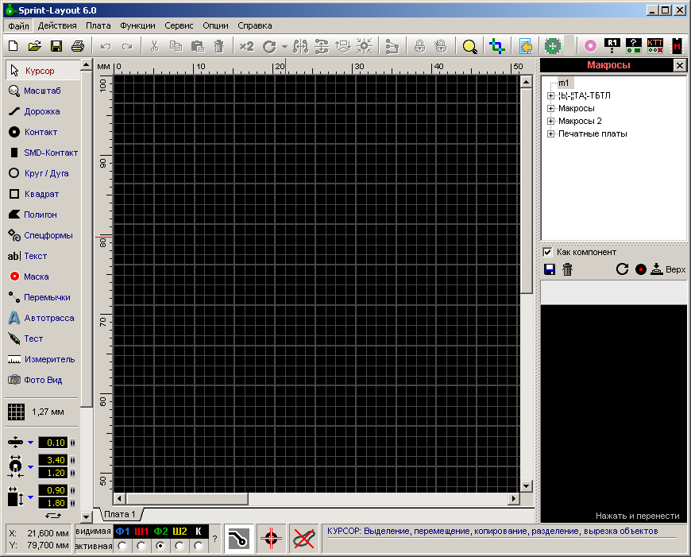
Центральную и самую большую часть окна занимает рабочее поле, размеченное сеткой. Сразу под заголовком окна программы расположено меню, стандартное для Windows-приложений и панель инструментов. Слева - панель выбора инструментов трассировки, настройки сетки и установки свойств примитивов. Справа открыта панель по работе с макросами. Внизу отображается статус-бар с координатами курсора, кнопками управления слоями платы и тремя дополнительными инструментами трассировки.
Слои платы
В Sprint Layout для проектирования платы имеются семь слоев:
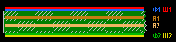
- Верхняя сторона фольги Ф1.
- Верхняя сторона шелкографии (маркировка) Ш1.
- Внутренний слой фольги 1 (В1)
- Внутренний слой фольги 2 (В2)
- Нижняя сторона фольги Ф2.
- Нижняя сторона шелкографии (маркировка) Ш1.
- Контур платы (О).
Управление этими слоями производится в статус-баре:
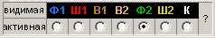
Круглыми кнопками выбирается слой для работы, а нажатием на имя слоя над этими кнопками производится включение/отключение видимости выбранного слоя. Если в свойствах платы сброшен флажок "Многослойная", то слои В1 и В2 не отображаются
Примечание - Активный слой отключить нельзя.
При проектировании используется принцип "прозрачной" платы: в процессе трассировки мы как бы смотрим на плату сверху сквозь все слои и видим первым слоем верхнюю маркировку. Нижние же слои (Ф2 и Ш2) выглядят зеркально.
Нажатие на вопросительный знак в статус-баре открывает окно информации о слоях, поясняющее назначение слоев и их цвета:
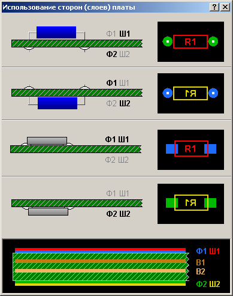
Главное меню
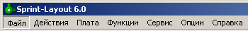
Меню "Файл"
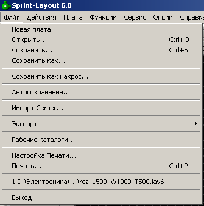
- Новый - создание нового файла;
- Открыть - открыть существующий документ;
- Сохранить - сохранить открытый документ;
- Сохранить как - сохранить открытый документ под другим именем;
- Сохранить как Макрос - сохранить открытый документ в виде макроса;
- Автосохранение - открывает настройки автоматического сохранения открытого документа;
- Импорт Gerber - для просмотра файлов формата Gerber
- Экспорт - меню экспорта документа в другие форматы;
- Рабочие каталоги - открывает настройки каталогов для хранения рабочих файлов;
- Настройки Печати - открывает окно выбора принтера и параметров бумаги;
- Печать - открывает настройки печати;
- Выход - выход из программы (равнозначно кнопке "Закрыть" в заголовке окна).
Меню "Редактировать"
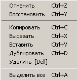
- Отменить - отменить последнее действие;
- Восстановить - вернуть отмененное действие;
Примечание - Максимально возможное количество действий, по которым можно "передвигаться" кнопками "Отменить" и "Восстановить" задается в настройках. - Копировать - копировать элемент в буфер обмена;
- Вырезать - вырезать элемент в буфер обмена;
- Дублировать - создать дубликат элемента;
Примечание - Функция аналогична действиям "Копировать -> Вставить". - Удалить - удалить выделенный элемент;
- Выделить все - выделить все элементы на рабочем поле.
Далее следует прояснить принцип управления платами в программе. Каждый документ в Sprint Layout может содержать в себе множество раздельных печатных плат, которые отображаются как закладки в нижней части окна сразу под рабочим полем:
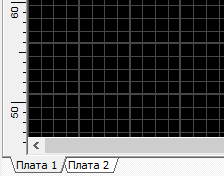
Для управления платами в пределах документа имеется свой пункт меню.
Меню "Плата"
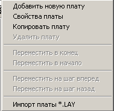
- Добавить новую плату - создать новую печатную плату в документе.
Функция открывает окно создания новой платы, где можно задать имя будущей платы и указать ее свойства.
Есть три шаблона создания платы. Первый создает полностью пустое поле, для которого можно задать ширину и высоту:Второй - плату с заданными размерами (на рисунке 160 на 100 мм) и контур платы с отступом от краев рабочего поля на заданное расстояние (20 мм на рисунке).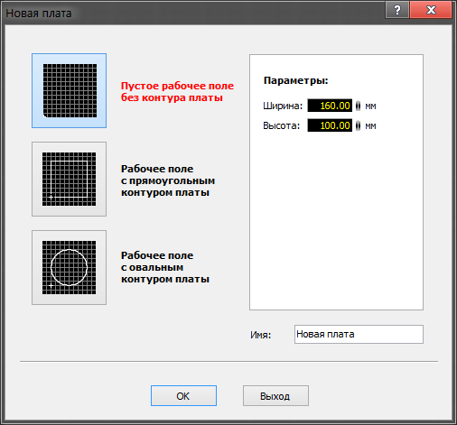
Третий - квадратное поле с круглым контуром платы заданного диаметра (на рисунке 100 мм). Расстояние от края поля до контура также задается (на рисунке 20 мм).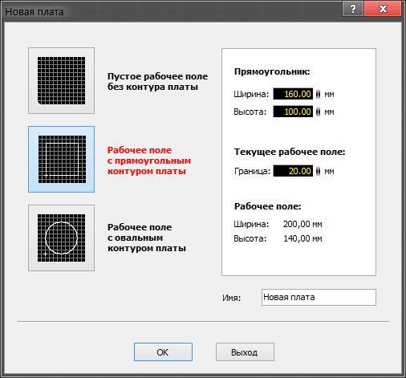
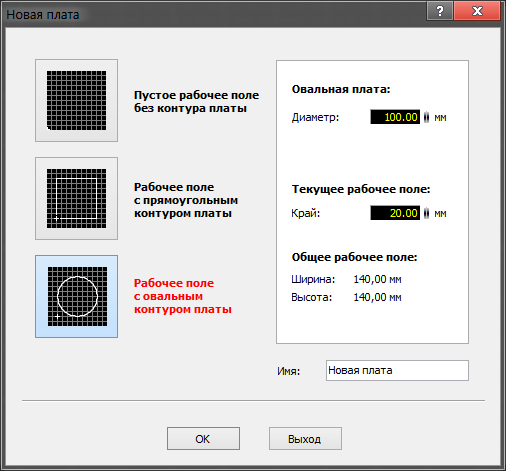
- Свойства платы - пункт открывает дополнительную панель справа, в которой можно изменить параметры текущей платы:
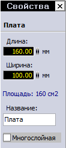
По умолчанию создается двухслойная печатная плата. Галочка "Многослойная" добавляет дополнительно два внутренних слоя В1 и В2.
- Копировать плату - создать копию текущей платы;
Примечание - Данное действие НЕ равнозначно действиям "Выделить все -> Копировать -> Вставить". - Удалить плату - удалить текущую плату из документа;
- Переместить в конец - поставить текущую плату последней в списке (с правого края);
- Переместить в начало - поставить текущую плату первой в списке (с левого края);
- Переместить на шаг вперед - сместить текущую плату в списке плат на один шаг вправо;
- Переместить на шаг назад - сместить текущую плату в списке плат на один шаг влево;
- Импорт платы *.LAY - импортировать все платы из внешнего lay6-файла.
Меню "Функции"
Следующая группа пунктов меню работает для элементов, выделенных на рабочем поле.
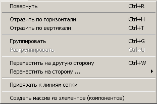
- Повернуть - повернуть элемент на заданный угол;
- Отразить по горизонтали - отразить элемент зеркально по горизонтали;
- Отразить по вертикали - отразить элемент зеркально по вертикали;
- Группировать - объединить выделенные элементы в группу;
- Разгруппировать - разделить группу на составные элементы;
- Переместить на другую сторону - сменить слой выбранного элемента на противоположный (функция работает для парных слоев - М1 и М2, К1 и К2);
- Переместить на сторону - перенести выбранный элемент на конкретный слой (выбирается из подменю);
- Привязать к линиям сетки - привязать узлы элемента к узлам сетки;
- Создать массив из элементов (компонентов) - открывает окно для создания из выделенных элементов прямолинейный или круговой массив с заданными параметрами.
Предлагается два варианта размещения элементов. Первый вариант - в виде массива:Здесь задается количество элементов и шаг размещения по горизонтали и вертикали.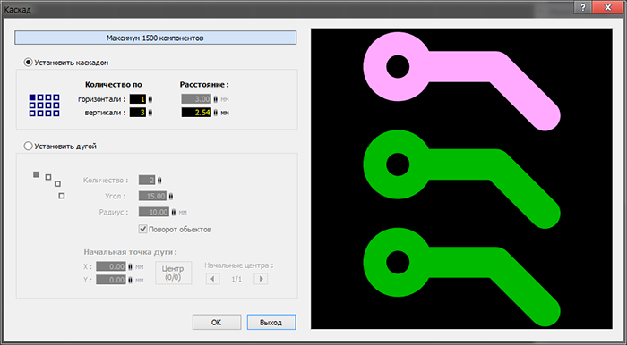
Второй вариант - размещение заданного количества элементов по дуге с определенным радиусом и с шагом в заданный угол:Также дополнительно задаются координаты размещения начальной точки дуги.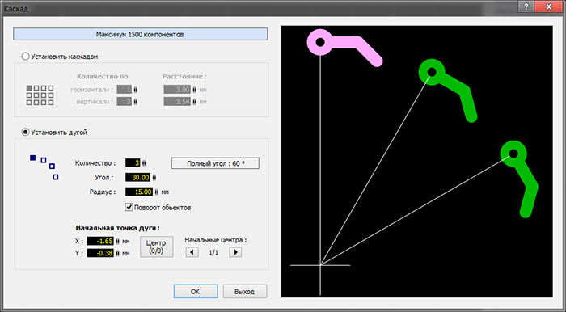
Меню "Сервис"
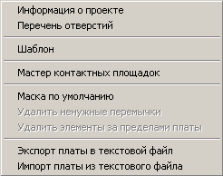
- Информация о проекте - открыть окно для ввода информации и текущем проекте:
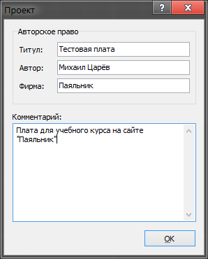
- Перечень отверстий - вывести окно со списком всех отверстий на текущей плате:
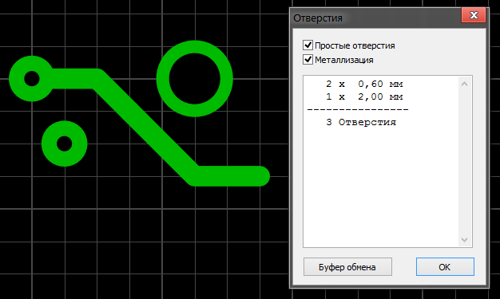
- Шаблон - загрузить рисунок в качестве фона платы (используется для отрисовки по готовому рисунку платы)
- Мастер котактных площадок - запустить мастер создания посадочных мест;
- Маска по умолчанию - сброс паяльной маски по умолчанию (оставить только для контактных площадок);
- Удалить ненужные перемычки - удалить виртуальные соединения, реализованные физически.
- Удалить элементы за пределами платы - удалить элементы, которые остались за границами платы;
- Экспорт платы в текстовый файл - экспортировать элементы платы в текстовый файл;
- Импорт платы из текстового файла - импортировать элементы платы из текстового файла.
Примечание - Эти текстовые файлы используются скорее для программистов, которые хотят создавать новые импорт или экспорт фильтры для Sprint-Layout, чем для обычных пользователей.
Меню "Опции"
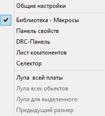
- Общие настройки - открыть окно настроек программы;
- Библиотека-Макросы, Панель свойств, DRC-панель, Лист компонентов и Селектор - открыть дополнительные панели программы (будут рассмотрены в следующих частях курса);
- Лупа всей платы - изменить масштаб так, чтобы уместить всю плату в окне;
- Лупа всех объектов - изменить масштаб так, чтобы уместить все элементы в окне;
- Лупа для выделенного - изменить масштаб так, чтобы уместить все выбранные элементы в окне;
- Предыдущий размер - вернуть предыдущее значение масштаба.
Меню "Информация"
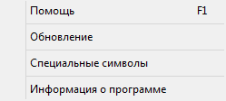
- Помощь - открыть окно справки по программе;
- Обновление - открыть окно обновления программы;
- Специальные символы - открыть окно с подсказкой по вводу специальных символов, таких как °, €, µ и т.п.;
- Информация о программе - открыть окно информации о программе (версия, разработчики и др.).
Панель инструментов
Под главным меню находится панель инструментов, содержащая в себе кнопки как дублирующие некоторые функции из главного меню, так и с другими интересными функциями.
Назначение кнопок можно посмотреть во всплывающих подсказках, появляющихся при наведении на них курсора мыши. Рассмотрим те кнопки, функции которых мы еще не рассматривали.
Поворот
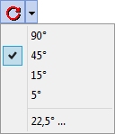
Поворачивает выбранный компонент на определенный угол. Есть четыре предустановленных значения угла, но можно ввести любой другой, выбрав последний пункт в выпадающем меню.
Выравнивание
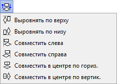
Выровнять выделенные элементы выбранным способом.
Прозрачность
Включается режим прозрачности и все слои просвечивают друг через друга
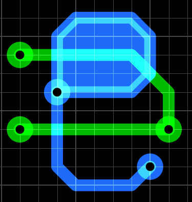
Настройки программы
Выбрав пункт "Общие настройки" в меню "Опции" открывается окно глобальных настроек программы. В настройках имеется несколько разделов. Рассмотрим их все по очереди.
Основные установки
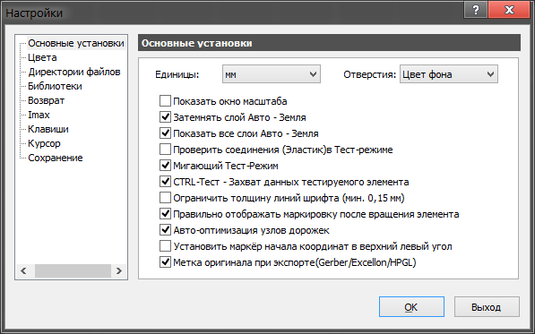
- Единицы - выбор единиц измерения по умолчанию;
- Отверстия - выбор цвета отверстий на плате (три варианта: цвет рабочего поля, белый или черный);
- Показать окно масштаба - отображать в левой панели миниатюрную карту платы:
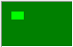
- Затемнять слой Авто-земля - делать полигон Авто-земли немного темнее цвета слоя, на котором он находится;
- Показать все слои Авто-земля - показать полигоны Авто-земли на всех слоях (отключение функции оставляет показ полигона только активного слоя);
- Проверить соединения в Тест-режиме - при использовании функции "Тест" будут рассмотрены все элементы, которые связаны соединениями;
- Мигающий Тест-режим - подсвеченные дорожки мигают в режиме Теста;
- Ctrl-Тест - захват данных тестируемого инструмента - выбрав элемент на рабочем поле, можно посмотреть его свойства в левой панели, а при выборе с нажатой клавишей Ctrl можно "захватить" эти значения для использования этих значений для следующего рисунка;
- Ограничить толщину линий шрифта - включить ограничение минимальной высоты шрифта любого текста на плате;
- Правильно отображать маркировку после вращения элемента - при вращении маркировка никогда не оказывается перевернутой;
- Авто-оптимизация узлов дорожек - автоматическое удаление неиспользуемых узлов дорожек;
- Установить маркер начала координат в верхний левый угол - по умолчанию, маркёр начала координат устанавливается в верхний левый угол. Если эту опцию не ставить, то маркёр устанавливается в нижний левый угол. Смена положения маркёра происходит при новом запуске программы;
- Метка начала координат при экспорте - при включенной функции при CAM-экспорте в качестве начала координат будут передаваться координаты установленной точки начала координат. При отключенной функции по умолчанию в качестве начала координат передаются координаты верхнего левого угла платы.
Цвета
Настройка цвета для различных слоев. Доступны четыре варианта расцветки - один предопределенный "Стандарт" и три пользовательских.
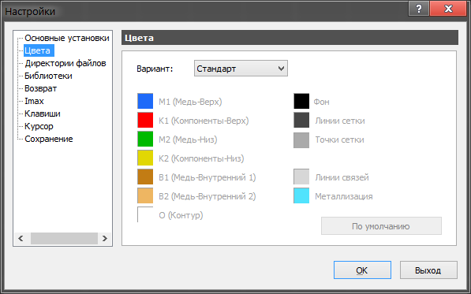
Директории файлов
Определение директорий на диске для сохранения различных типов файлов, создаваемых программой. Можно выбрать функцию, отключающую эту сортировку.
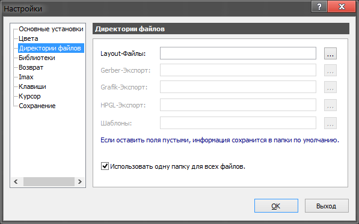
Библиотеки
В данном разделе настроек указывается путь для библиотеки макросов.
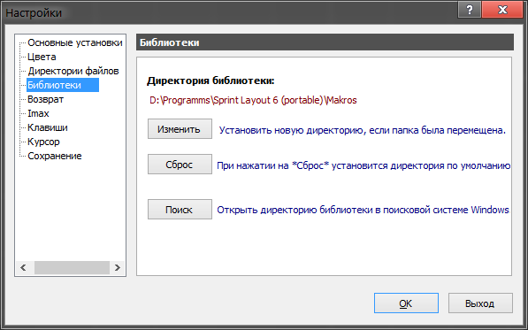
Возврат
Установка максимального числа шагов отмены действий.
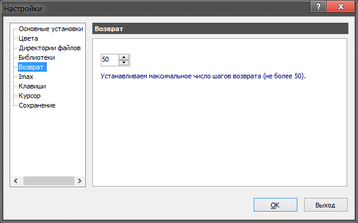
Imax
Установка начальных параметров встроенного калькулятора для расчета максимального тока в проводниках.
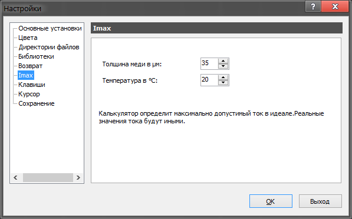
Клавиши
Переопределение горячих клавиш.
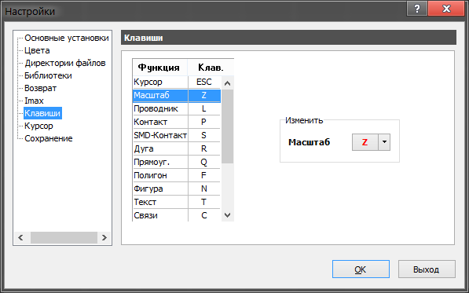
Курсор
При рисовании графических элементов на плате курсор принимает форму большого перекрестия и в реальном времени отображает изменение своих координат и, дополнительно, в зависимости от рисуемого графического примитива, длины.
В данном разделе меню производятся настройки его внешнего вида.
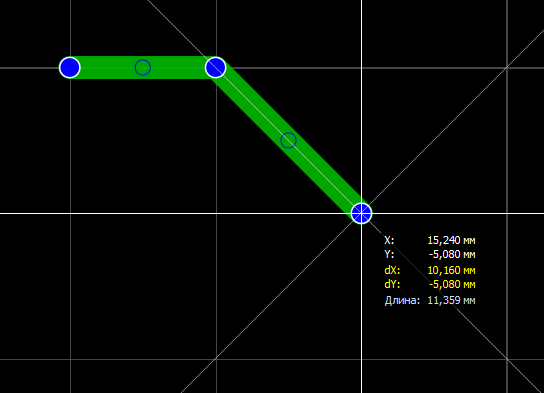
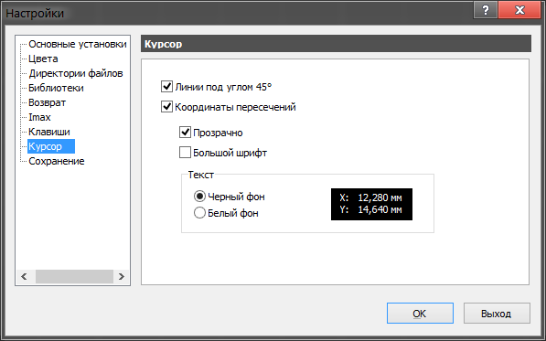
Сохранение
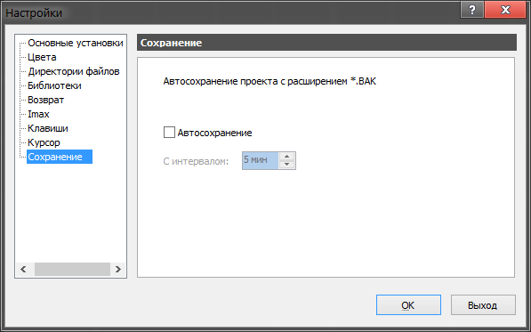
Параметры автосохранения файлов - выбирается интервал сохранения в минутах. Периодически сохраняемый файл будет размещён в той же папке и с тем же именем, что и исходный файл, только с расширением *.bak, чтобы отличить его от исходного файла.
Координаты и сетки
На рабочем поле существует точка начала координат (белая окружность с перекрестием), которая служит началом отсчета для линеек, расположенных над рабочим полем и слева от него:
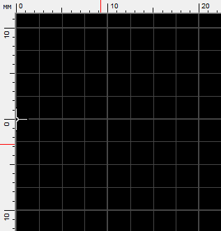
Текущие координаты курсора показаны в виде красных полосок на линейках и в виде числовых значений в нижнем левом углу главного окна программы:
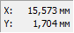
Sprint Layout позволяет работать с двумя видами единиц измерения - дюймовой (используются милы - тысячные доли дюйма) и метрической (используются миллиметры - тысячные доли метра).
Все ключевые узлы графических элементов по умолчанию привязаны к выбранному шагу сетки. Настройки сетки производятся при помощи кнопки на левой панели:
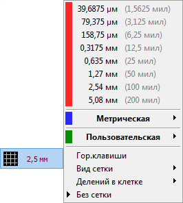
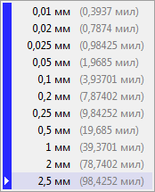
Производителем заданы некоторые наиболее распространенные шаги сетки как для дюймовых, так и для метрических единиц измерения. Но можно без проблем добавить любой другой шаг, выбрав строчку меню "Пользовательская" и введя необходимую величину.
Есть возможность выбрать вид сетки - в виде точек или в виде линий, указать через какое количество шагов линия сетки будет утолщена или вовсе отключить отображение сетки. В случае выбора последнего пункта привязка элементов к выбранному шагу сетки не исчезает, отключается лишь отображение линий сетки.
Также существует девять горячих клавиш, на которые можно назначить часто используемые шаги сетки. Их настройка вызывается выбором пункта "Горячие клавиши" в меню сеток:
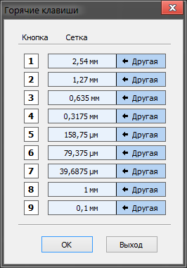
Переопределения значения горячей клавиши производится нажатием на кнопку "Другая".
Источники
cxem.net - Курс по Sprint Layout 6. Часть 1 - Знакомство с интерфейсом